Style Picks
Shopping list built from your Style Swipe likes. Prices and stock checked on each product page Oct 17, 2026 (PT). Sale prices can end.
Your uniform
- Top: an open overshirt (black, camel, or a quiet check) over a plain white or black heavyweight tee.
- Bottom: black or dark slim jeans, or relaxed black trousers.
- Shoes: your Jordan 1s, plus one quiet suede or white pair.
- Swap: on cold days, trade the overshirt for a solid grey crewneck.
Starter kit: buy these 5 first
The full formula in one order: black overshirt, white and black tees, black jeans, and a camel overshirt for a second look.
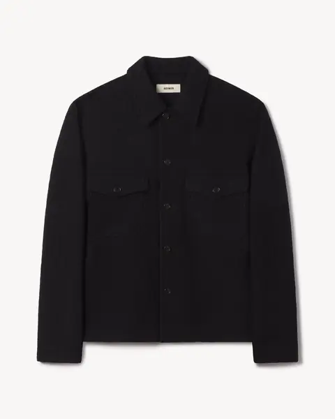
Felted Field Shirt, Black
Buck Mason · Black overshirt$248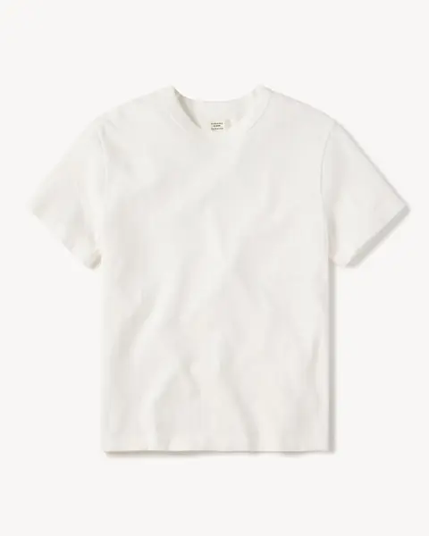
Field-Spec Cotton Heavy Tee, White
Buck Mason · White heavyweight tee$62- Field-Spec Cotton Heavy Tee, Black
Buck Mason · Black heavyweight tee$62 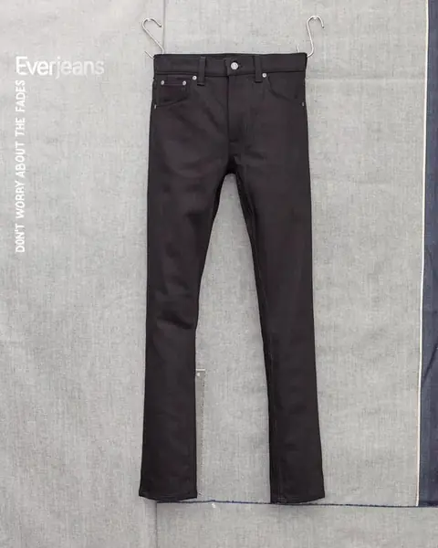
Lean Dean Dry Everblack
Nudie Jeans · Black slim jeans$195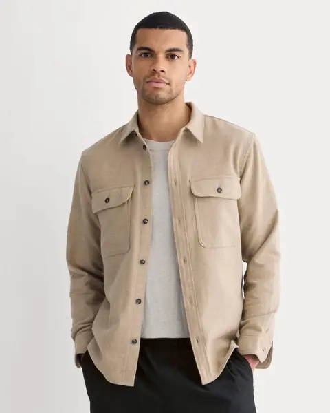
The Heavyweight Overshirt, Dark Heathered Camel
Everlane · Camel overshirt$128
Before tax and shipping. A cheaper start: swap in the Uniqlo U tees ($19.90) and the Uniqlo wide pants ($59.90).
Overshirt, black
The anchor of the uniform. Wear it open over a white tee.
Felted Field Shirt, Black
$248
GQ's best all-around shirt jacket for 2026: 340 GSM boiled merino, warm enough to be the jacket, soft enough for just a tee underneath.
Fit: Classic fit. Buck Mason tops tend to run about a size large, so size down for a trim look or take your usual size to layer a hoodie.
Shop ›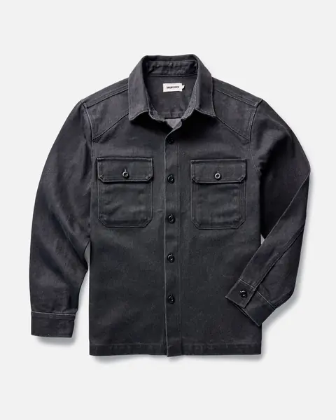
The Shop Shirt in Coal Chipped Canvas
$178
12.5 oz stone-washed organic canvas from an SF brand. Near-black charcoal that softens into a workwear patina.
Fit: Taylor Stitch cuts sturdier and a bit slimmer than Buck Mason. Size up one if you want it roomy over a sweater.
Shop ›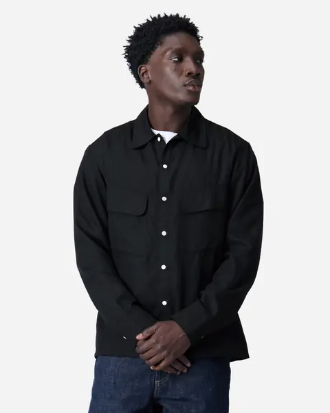
Western Overshirt, Black
$185 (was $245)
Wool/lyocell twill that drapes like gabardine. A dressier, smoother black for nights out.
Fit: Sale pick, sizes S–2X in stock. Check 3sixteen's chest measurement against a shirt you already like.
Shop ›Overshirt, camel / khaki
Your second jacket-shirt. Warmer color, same formula.
The Heavyweight Overshirt, Dark Heathered Camel
$128
A long-running r/malefashionadvice staple: 8 oz cotton twill, a relaxed straight cut, and the right camel for black jeans.
Fit: Fits true to size at first, then shrinks after washing (even cold). Size up if you want room to layer. Some reviewers find the sleeves tight. Size S was sold out when I checked.
Shop ›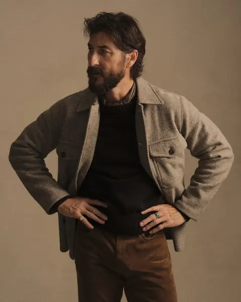
Felted Field Shirt, Heather Stone
$248
The same GQ-favorite field shirt in a warm stone/taupe. Buy one fit, get two colors.
Fit: Same as the black one: runs about a size large.
Shop ›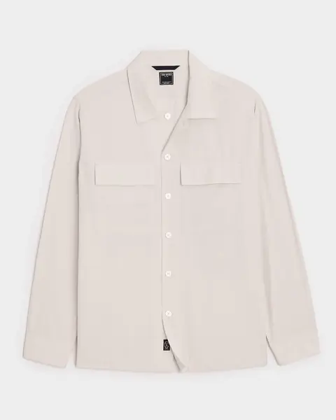
Relaxed Twill CPO Overshirt, Beige
$124 (was $248)
Italian cotton twill CPO at half price. It's a light, sandy beige rather than true camel.
Fit: Relaxed cut, so take your normal size. Todd Snyder lists XS–XXL.
Shop ›Check flannel overshirt, muted
For pattern days. Pick quiet checks that still go with black jeans.
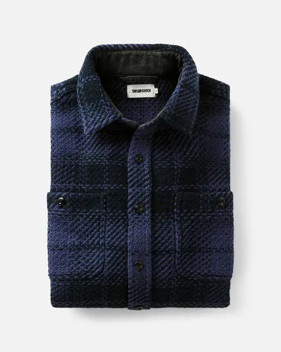
The Cutter Overshirt in Lighthouse Check
$178
Navy-and-black check in heavy 12.5 oz organic twill. It reads as solid from a distance, so it's the quietest check that still works with black denim.
Fit: Owners on r/taylorstitch say it fits true to size and runs a touch larger than Taylor Stitch's Jack shirt. Size up for a relaxed overshirt look.
Shop ›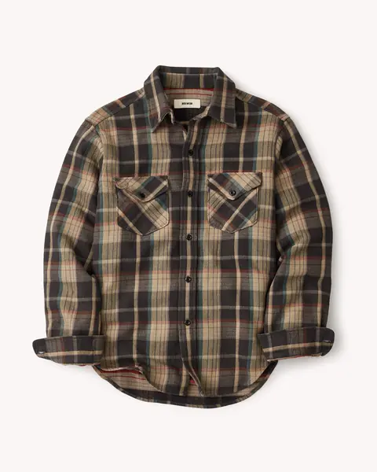
Catfisher Plaid Brawny Flannel Work Shirt
$178
A muted brown/black/khaki plaid in double-brushed heavyweight flannel, styled after 1950s workwear.
Fit: Only M–XL were in stock. Runs large like other Buck Mason tops.
Shop ›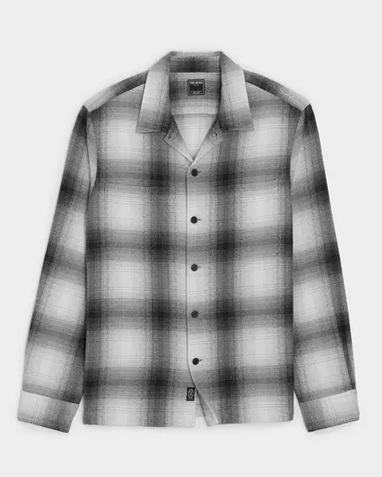
Italian Double-Brushed Flannel Shirt, Charcoal Shadow Plaid
$134 (was $268)
A grey/black/white shadow plaid that matches the black-and-white palette. It's a lighter shirt-weight flannel, not a jacket.
Fit: Todd Snyder describes it as a little roomy for layering. XS–L in stock.
Shop ›Plain heavyweight tees, white + black
The base layer. Heavy cotton hangs cleanly under an open overshirt.
Field-Spec Cotton Heavy Tee, White (also Black)
$62
GQ's best heavyweight tee and a regular r/malefashionadvice recommendation: 310 GSM, structured, and it won't cling under an open overshirt.
Fit: Classic fit, slightly cropped, which is good for wearing untucked under an overshirt. Buy one each of white and black.
Shop › Black version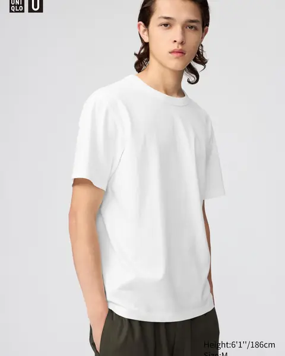
Crew Neck T-Shirt (white or black)
$19.90
The value pick Reddit keeps coming back to: thick for the price, good collar, 4.6★ from 2,000+ reviews.
Fit: Boxy and roomy. Go down a size for a cleaner fit under an overshirt. Some say the fabric is thinner than it was a few years ago.
Shop ›Black slim jeans (+ dark indigo)
The default bottom in almost every card you liked.
Lean Dean Dry Everblack
$195
Black that stays black: Nudie rates Everblack for 40+ washes without real fading. Slim tapered, which stacks cleanly over Jordan 1s.
Fit: Everblack runs tight, so size up one in the waist. Many W28–W32 sizes were in stock.
Shop ›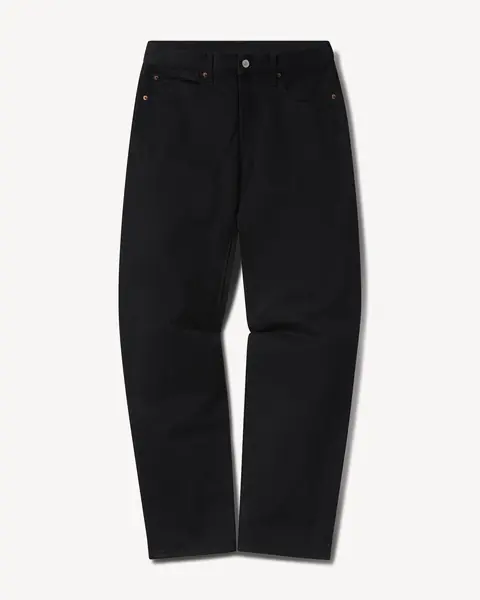
B007 Japanese Denim Maverick Slim Jean (black)
$198
13.25 oz Japanese black denim, slim through thigh and leg, from the same brand as the tee and field shirt.
Fit: True to waist size. There's less stretch than typical stretch jeans, so expect a short break-in.
Shop ›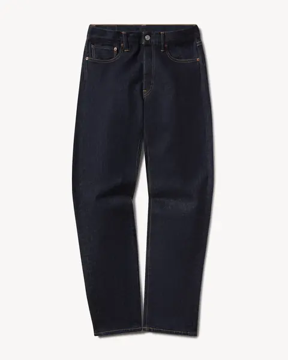
D035 Japanese Denim Maverick Slim Jean (dark indigo)
$198
The dark-indigo alternative. Same fit as the black pair, and it pairs with every overshirt above.
Fit: Same as B007: true to size, light stretch.
Shop ›Relaxed black trousers for Jordans
The wider leg lets high-tops stack and breathe.
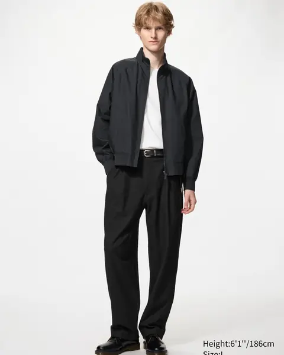
Pleated Relaxed Wide Pants, Black
$59.90
The cheapest way to test the wider-leg Jordan look. 4.9★ from early reviews, with pleats and an easy waist.
Fit: Reviewers say true to size, but less baggy than the name suggests. Size up and hem if you want more volume.
Shop ›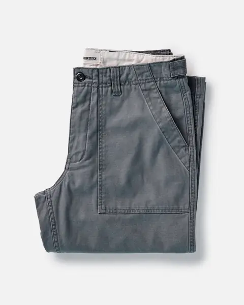
The Surplus Pant in Faded Black Reverse Sateen
$148
Military surplus-style trouser in 9.5 oz organic sateen with back tabs. Faded black, closer to charcoal, looks intentional next to a crisp white tee.
Fit: Waist/inseam sizing (28–38, 32 or 34 inseam). It's pigment-dyed and will fade more over time.
Shop ›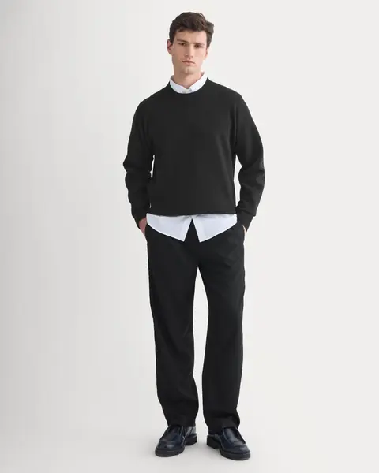
Pleated Trouser in Tailor Twill, Black
$50 (was $198)
Double-pleated with an elastic drawcord waist: a smarter trouser that still works with sneakers. Steep discount.
Fit: Clearance sizing: only XS and L were in stock.
Shop ›Crewneck sweater, grey
Your second-most-liked look: one solid knit, nothing competing.
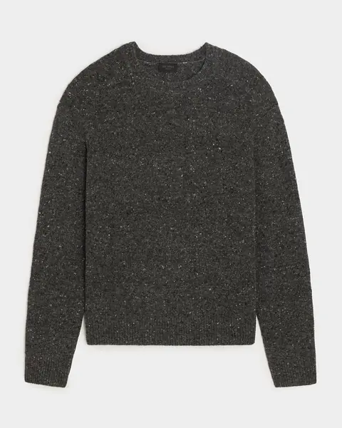
Donegal Crewneck Sweater, Manor Grey
$198
Dark, flecked Donegal yarn gives the textured charcoal-grey you liked, with enough depth that a plain crewneck looks deliberate.
Fit: Todd Snyder lists it as a slim fit. Size up if you'll wear a tee under it plus an overshirt on top.
Shop ›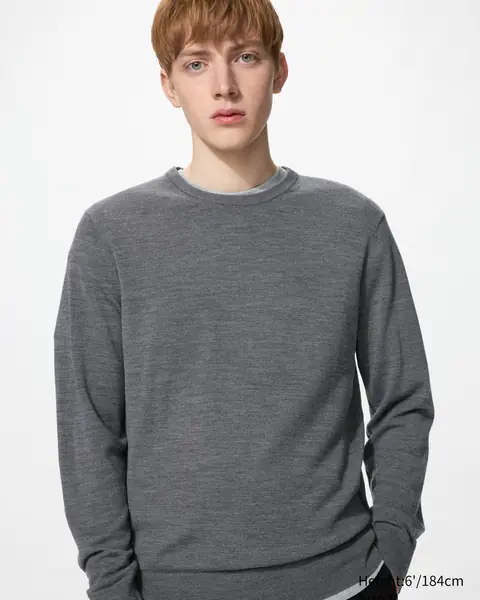
Merino Sweater (crew), Gray
$49.90
GQ's and Esquire's value pick: 19.5-micron extra-fine merino, machine-washable, under $50. Buy two.
Fit: Several reviewers say it runs small. Size up one for a relaxed fit.
Shop ›One quiet shoe
For days the Jordans are too loud.
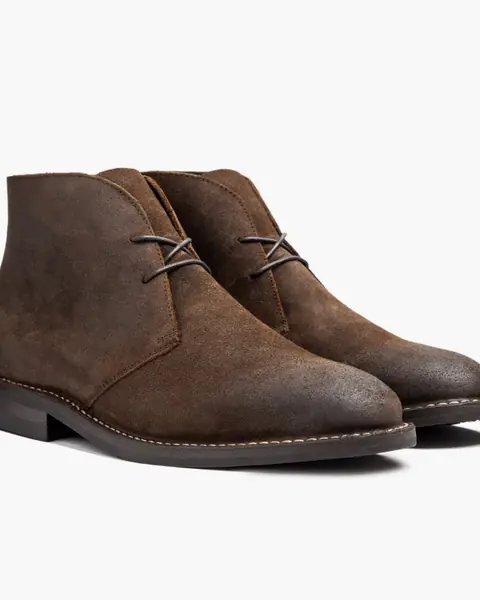
Scout Chukka, Mocha Suede
$160
You liked the suede-boot outfits. This brown suede chukka with WeatherSafe treatment suits SF and works with dark jeans or black trousers.
Fit: Thursday and reviewers suggest a half size down from your sneaker size. Wide widths are available.
Shop ›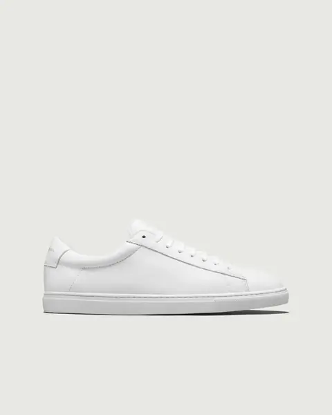
Low 1, White
$179.99
A clean Italian full-grain white leather sneaker, the non-Jordan option for the quiet tech-founder days.
Fit: Order your usual whole size. If you wear half sizes or have wide feet, size up.
Shop ›Optional: sherpa-lined overshirt
For SF fog. Only if you want a warmer layer.
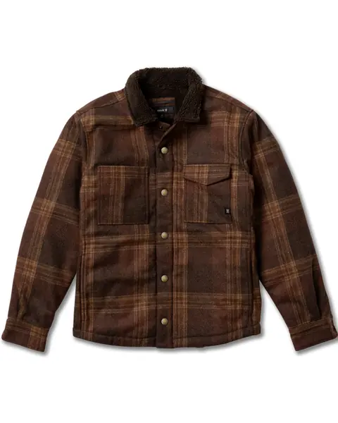
Hebrides 2.0 Sherpa Jacket, Tobacco
$175
Brown-plaid wool-blend shirt jacket with a plush sherpa lining, snap chest pockets and handwarmers. Overshirt cut, made for fog.
Fit: Classic overshirt fit, S–XXL. I couldn't find a review consensus on sizing, so check Roark's chart. It's tobacco/tan, not cream: I couldn't find a mid-priced cream sherpa-lined overshirt from these brands.
Shop ›How to size each brand
| Buck Mason | Tops run about a size large, so size down for trim or stay true to layer. Jeans are true to waist with little stretch. 365-day returns. |
| Taylor Stitch | Sturdier and slightly slimmer than Buck Mason. Shirt sizes map to chest (S-38, M-40, L-42). Size up for a relaxed overshirt. |
| Everlane | The overshirt shrinks after the first wash. Size up if you're between sizes. |
| Todd Snyder | The Donegal crew is a slim fit, so size up to layer. The CPO and flannel are relaxed: stay true. |
| Uniqlo | Uniqlo U tees are boxy, so size down for a clean fit. The merino runs small, so size up. The wide pants run true; size up for more volume. |
| Nudie | Everblack is tight. Size up one in the waist, and the denim stretches a bit with wear. |
| Thursday / Oliver Cabell | Thursday: a half size down from sneakers. Oliver Cabell: whole sizes only, so half sizes go up. |
| 3sixteen / Roark | Compare their chest measurements to a shirt you own. No strong review consensus. |
Tip: measure the chest of an overshirt you like (armpit to armpit × 2) and match it to each brand's chart.
Research
The picks lean on 2025–2026 roundups and owner threads. Prices come from each brand's live product page.
- GQ: Best shirt jackets 2026 (Buck Mason Felted Field Shirt = best all-around)
- Esquire: Best shirt jackets 2026
- GQ: Best T-shirts 2026 (Buck Mason Field-Spec = best heavyweight)
- r/malefashionadvice: Best heavyweight tee
- r/malefashionadvice: Good brands for heavyweight tees
- Gear Patrol: Best wool sweaters
- Esquire: Merino essentials 2026 (Uniqlo merino)
- Welcome Objects: Everlane Heavyweight Overshirt review
- r/taylorstitch: Cutter sizing
- Nudie: Everblack (40+ washes)
- Esquire: White sneakers 2026
- The Modest Man: Thursday Scout review
- r/uniqlo: Pleated wide pants fit